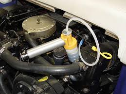
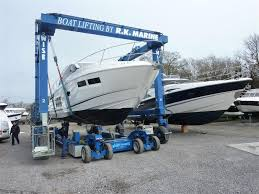

What a Yacht Survey Really Covers (And Why It Protects You)
Excerpt / meta description: A marine survey is the single best money you spend before buying a yacht. Here is what a pre-purchase survey actually covers, how the sea trial and haul-out fit in, and how the findings turn into real negotiating leverage.

A boat is one of the larger purchases most people make, and unlike a house, much of what matters is hidden below the waterline, behind panels, and inside systems you cannot see at the dock. That is what a marine survey is for. Done right, a survey is not a formality you check off before closing. It is the part of the deal that protects your money and tells you exactly what you are buying.
Here is what a survey really covers, who performs it, and how a good broker uses the findings to your advantage.
Pre-purchase survey vs insurance survey
People hear "survey" and assume there is just one. There are two common types, and they answer different questions.
A pre-purchase survey is the deep one. The surveyor evaluates the overall condition and value of the vessel for you, the buyer. They look at hull integrity, structural components, electrical and plumbing systems, fuel and exhaust, steering and through-hulls, safety equipment, and the general state of the boat. The goal is to find anything that affects safety, function, or value before your money changes hands.
An insurance survey is narrower. Insurers require it to confirm the boat is seaworthy and worth what you are insuring it for. It leans toward safety and risk: condition of through-hulls, fire and electrical hazards, fuel systems, and whether the vessel meets the standards the underwriter cares about. Many insurers also require periodic surveys on older boats as a condition of keeping coverage.
If you are buying, you want the pre-purchase survey. Usually it also satisfies the insurer, but confirm that with your agent before you schedule.
The Three Pieces that Matter Most
A thorough pre-purchase inspection is usually three coordinated events. Each one finds different problems.
The sea trial is the boat in its natural habitat. The surveyor and the buyer run the vessel under power, watching how she handles, how the engines load and hold temperature, how the electronics and steering perform, and whether anything vibrates, leaks, or behaves badly under real conditions. You learn things at cruising RPM that you will never learn tied to a piling. If you are buying a sailboat, you will also raise the sales and make sure the boat handles as expected under sail.
The haul-out gets the boat out of the water so the surveyor can inspect everything below the waterline. This is where you see the true condition of the hull, the running gear, the props and shafts, the rudders, and the bottom. On a fiberglass hull the surveyor checks for blistering, prior repairs, and any sign of moisture intrusion. You simply cannot evaluate a hull honestly while it is wet and floating.

The engine survey is often a separate specialist, and on any serious purchase it is worth it. A diesel mechanic evaluates the engines and generators directly: oil analysis, compression where applicable, hours, service history, and how the machinery actually performs under load. Engines are the most expensive systems on most yachts, so an independent read on them is rarely wasted money.
If you are purchasing a sailboat, a rigging survey is usually not part of the hull survey. Ask your hull surveyor if he is able to perform a rigging survey. If not, you may want to consider hiring a rigging expert to survey the mast, standing rigging, and running rigging.
How findings become leverage
This is the part buyers underestimate. A survey it not just a pass or fail. It is a detailed, documented list of the boat's actual condition, and that document can be leverage at the negotiating table.
Almost every used yacht comes back with findings. That is normal and expected. What matters is sorting them. Some items are safety related and need to be addressed before the boat is responsibly run. Some are real costs you will carry whether you want to or not. And some are cosmetic or routine wear that simply comes with a used boat.
Once you and your broker have that sorted, you have options. You can ask the seller to make repairs before closing. You can ask for a price reduction that reflects the cost of the work. Or you can accept the boat as is with full knowledge of what you are taking on. The point is that you are negotiating from facts, not from a hunch, and a seller has a hard time arguing with a licensed surveyor's written report.
A good broker runs this process for you. We help you line up a qualified, independent surveyor, we attend the sea trial and haul-out, and we translate the report into a clear path: what is worth pushing on, what is normal, and what the numbers should look like after the dust settles. That is the difference between a survey that just generates a stack of paper and a survey that actually protects your purchase.
The bottom line
Never skip the survey to save a few days or a few dollars. The cost of a survey is small next to the cost of the surprises it catches. Hire an independent surveyor who works for you, insist on a real sea trial and haul-out, bring in an engine specialist on anything significant, and use the findings to negotiate from a position of knowledge.
If you are getting close on a boat and want a surveyor recommendation or a second set of eyes on a report you already have, reach out to Clark at Haley Yachts. Walking buyers through exactly this process is a large part of what we do.